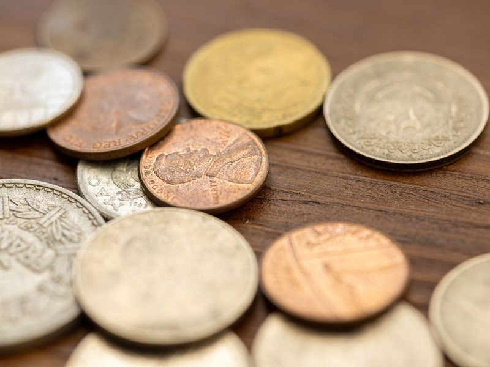
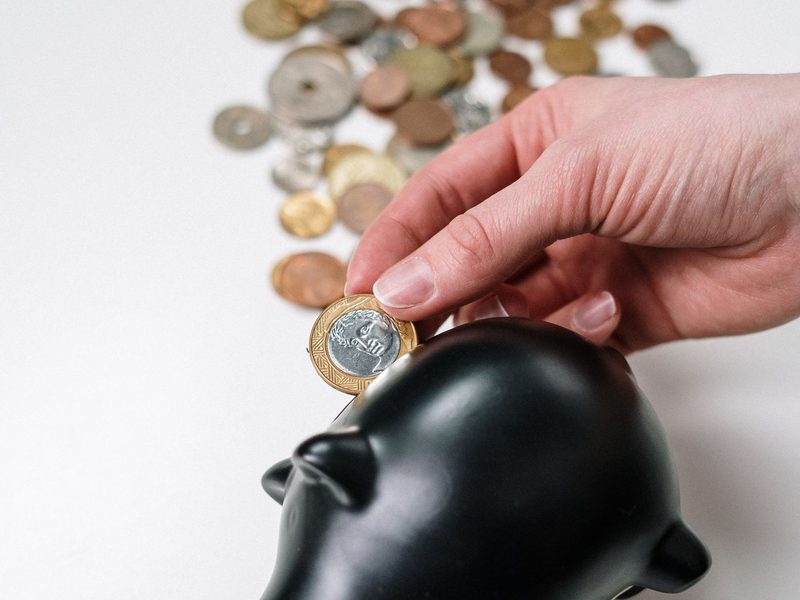
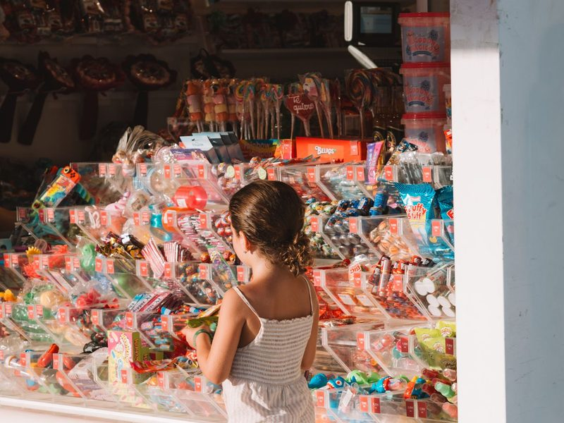

1centn.
分（貨幣單位）
100 cents ＝ 1 dollar
This candy costs fifty cents.這顆糖果五十分錢。
2changen. / v.
零錢；改變
零錢不可數；Keep the change. 不用找了
Here is your change.這是找你的零錢。
3dollarn.
元
NT dollar 新臺幣
This notebook is thirty dollars.這本筆記本三十元。

4moneyn.
錢
不可數：much money
I save my money in a piggy bank.我把錢存在小豬撲滿裡。
5pricen.
價格
價格高低用 high／low
The price of this bag is too high.這個包包的價格太高了。
6borrowv.
借入；向…借
borrow + 物 + from + 人
Can I borrow your eraser?我可以借你的橡皮擦嗎？

7buyv.
買
buy-bought-bought
I bought a new bike last week.我上週買了一台新腳踏車。
8costv. / n.
花費；成本
cost-cost-cost；主詞是「東西」
How much did your shoes cost?你的鞋子花了多少錢？
9lendv.
借出；借給
lend-lent-lent；lend + 人 + 物
Can you lend me your umbrella?你可以借我你的雨傘嗎？
10payv.
付錢；支付
pay-paid-paid；pay for 付…的錢
Can I pay by credit card?我可以刷卡付錢嗎？
11spendv.
花費（時間、金錢）
spend-spent-spent；主詞是「人」
My brother spends too much money on games.我哥哥花太多錢在遊戲上。
12cheapadj.
便宜的
cheap-cheaper-cheapest
The food at night markets is cheap.夜市的食物很便宜。
13expensiveadj.
昂貴的
more expensive、most expensive
This watch is too expensive for me.這支手錶對我來說太貴了。